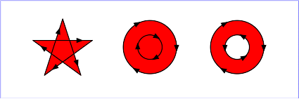

Description
Assigns styles to the target object, which may be a container, shape, text, raster image, or pattern. Styles are presentational attributes that define how the object is rendered.
Styles yields to a block if a block is present,
passing the target object as an argument. This is useful when
styles is chained to a container constructor
method such as g or rvg. By default, objects within a
container get the styles defined on the container.
Styles returns the target object, so other
methods can be chained to it.
Arguments
The argument is a hash. The hash keys are style name symbols. The hash values are the style values. RVG supports the following style names.
- :clip_path
- An outline used to clip a shape or collection of shapes. The value is an clipping path.
- :clip_rule
- If the
clip_pathstyle is used, how to determine if a point is inside or outside a the clip path. The value is a string, either 'nonzero' or 'evenodd'. The default is 'nonzero'. See thefill_ruleexample below. - :fill
- The fill color. The value must be a color name or a pattern. The default is 'black'.
- :fill_opacity
- The opacity of the fill color. A number between 0.0 (fully transparent) and 1.0 (fully opaque). The default is 1.0
- :fill_rule
- How to determine if a point is inside or outside a shape. The value is a string, either 'nonzero' or 'evenodd'. The default is 'nonzero'.
-
The following descriptions of 'nonzero' and 'evenodd' are
from the SVG
1.1 standard.
- nonzero
- This rule determines the "insideness" of a point on the canvas by drawing a ray from that point to infinity in any direction and then examining the places where a segment of the shape crosses the ray. Starting with a count of zero, add one each time a path segment crosses the ray from left to right and subtract one each time a path segment crosses the ray from right to left. After counting the crossings, if the result is zero then the point is outside the path. Otherwise, it is inside.
- evenodd
- This rule determines the "insideness" of a point on the canvas by drawing a ray from that point to infinity in any direction and counting the number of path segments from the given shape that the ray crosses. If this number is odd, the point is inside; if even, the point is outside.
- See the examples below.
- :opacity
- Both the stroke and the fill opacity. A number between 0.0 (fully transparent) and 1.0 (fully opaque). The default is 1.0. See below for an example.
- :stroke
- The stroke color. The value must be a color name or a pattern. The default is 'none', that is, transparent black ("#000000ff").
- :stroke_dasharray
- An array of numbers that specify the length of the dashes and gaps with which to draw a dashed line. If the array contains an odd number of values, the values are repeated to produce an even number of dashes and gaps. The numbers are in user coordinates. By default all lines are drawn as solid lines. See below for an example.
- :stroke_dashoffset
- Normally a dashed line is drawn using the first number in the stroke_dasharray as the length of the first dash. This style can be used to specify a different starting point in the array.
- :stroke_linecap
- The shape of the end of a line. The value may be one of the strings 'butt', 'round', or 'square'. The default is 'butt'. See below for an example.
- :stroke_linejoin
- The shape of the corner where two lines are joined. The value may be one of the strings 'miter', 'round', or 'bevel'. The default is 'miter'. See below for an example.
- :stroke_miterlimit
- If the
stroke_linejoinvalue is 'miter', a number specifying the ratio of the miter to the thickness of the lines being joined. When the limit is exceeded the join is converted from a miter to a bevel. The value must be a number greater than or equal to 1.0. The default is 4.0. - :stroke_opacity
- The opacity of the stroke color. A number between 0.0
(fully transparent) and 1.0 (fully opaque). The default is
1.0 unless
strokehas the default value 'none'. - :stroke_width
- The thickness of the stroke. The default is 1 user coordinate.
(Text styles are described with the Text class.)
Examples
:fill=>'#00ff00', :stroke=>'blue',
:stroke_width=>8
:fill_rule=>'nonzero'
:fill_rule=>'evenodd'
Three values of :opacity
:stroke_dasharray=>[10,5]
Three values of :stroke_linecap
Three values of :stroke_linejoin
Returns
obj